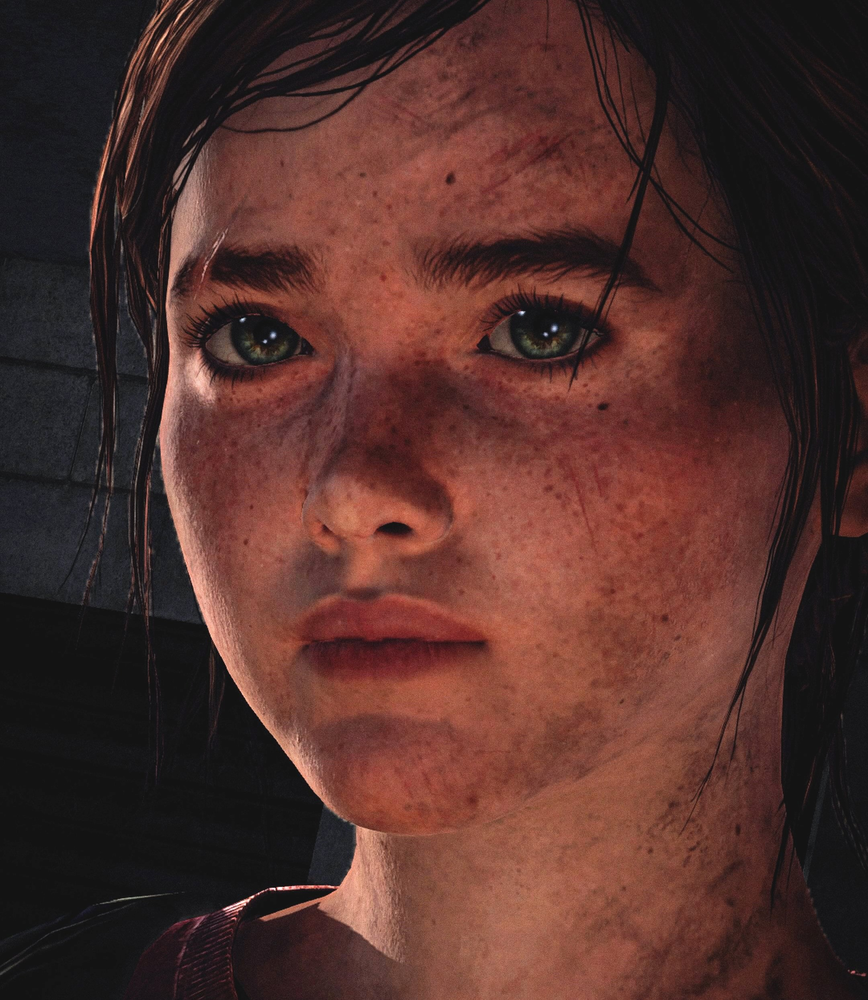

THE LAST OF THE TWO

LEFT BEHIND Personajes
Ellie Williams

Es una niña huérfana de 14 años, vivía en un internado militar. Es inmune al virus de Cordyceps, lo cual la llevó a conocer a Marlene , y posteriormente a Joel , con quien formo un fuerte vinculo .
Riley

Era una niña que vivía en un internado militar donde se hizo amiga de Ellie, pero a ella no le gustaban los militares, por lo que se unió a las luciérnagas.
Joel Miller

Es un contrabandista. se le asignó la tarea de contrabandear y proteger a Ellie. Joel finalmente formó un fuerte vínculo con ella.